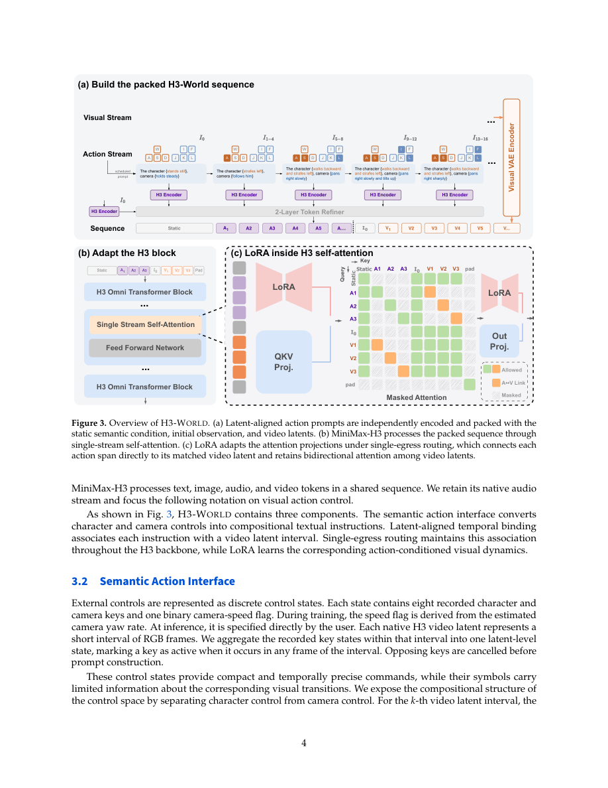

#1
★ 8/10
H3-World: Turning Language Understanding into World Control
H3-World: Turning Language Understanding into World Control

图 Figure · Page 4 of paper
🎯 （AI 中文深度分析暂不可用：Anthropic API 额度不足。英文栏为论文原文摘要，下方链接均可正常访问。）
We present H3-World, an efficient framework that turns the 33B MiniMax-H3 video generator into an interactive world model
| 维度 | 中文 | English |
|---|---|---|
| ❓ 待解决 的问题 |
（AI 中文深度分析暂不可用：Anthropic API 额度不足。英文栏为论文原文摘要，下方链接均可正常访问。） | We present H3-World, an efficient framework that turns the 33B MiniMax-H3 video generator into an interactive world model. Our key finding is that, as large video generators become more capable, language is emerging as a natural interface for control. MiniMax-H3, for example, already supports zero-shot control of character behavior and camera motion through natural-language instructions. Building on this, H3-World turns this coarse language interface into precise, temporally grounded world control, without introducing dedicated action modules. Specifically, we represent each action as a structured combination of character and camera instructions, and align them with the corresponding temporal video latents. To make the control temporally precise, we further introduce temporal attention routing, which restricts each instruction to its intended time interval and reduces control leakage across actions. Importantly, H3-World directly reuses the semantic representations learned during large-scale video pretraining and requires only lightweight adaptation. With only 8,000 gameplay samples, 10,000 LoRA optimization steps, and 0.199% trainable parameters, H3-World achieves effective character and camera control while preserving strong generation quality. It also generalizes to unseen scenarios. These results show that the control capabilities emerging in large video generators can be efficiently transformed into interactive world control. |
| 💡 解决 的亮点 |
（AI 中文深度分析暂不可用：Anthropic API 额度不足。英文栏为论文原文摘要，下方链接均可正常访问。） | See the paper’s original abstract in the "Problem / 背景" row above. |
| 🧪 实验 内容 |
（AI 中文深度分析暂不可用：Anthropic API 额度不足。英文栏为论文原文摘要，下方链接均可正常访问。） | See the paper’s original abstract in the "Problem / 背景" row above. |
| 📊 实验 结果 |
（AI 中文深度分析暂不可用：Anthropic API 额度不足。英文栏为论文原文摘要，下方链接均可正常访问。） | See the paper’s original abstract in the "Problem / 背景" row above. |
| 🏁 结论 | （AI 中文深度分析暂不可用：Anthropic API 额度不足。英文栏为论文原文摘要，下方链接均可正常访问。） | See the paper’s original abstract in the "Problem / 背景" row above. |
| 🔗 论文 链接 |
arXiv: 2609.01560v1 · 📥 PDF | |
⚙️ Method · 方法详解
（AI 中文深度分析暂不可用：Anthropic API 额度不足。英文栏为论文原文摘要，下方链接均可正常访问。）
See the paper’s original abstract in the "Problem / 背景" row above.
🌟 Why It Matters · 为什么重要
（AI 中文深度分析暂不可用：Anthropic API 额度不足。英文栏为论文原文摘要，下方链接均可正常访问。）
See the paper’s original abstract in the "Problem / 背景" row above.